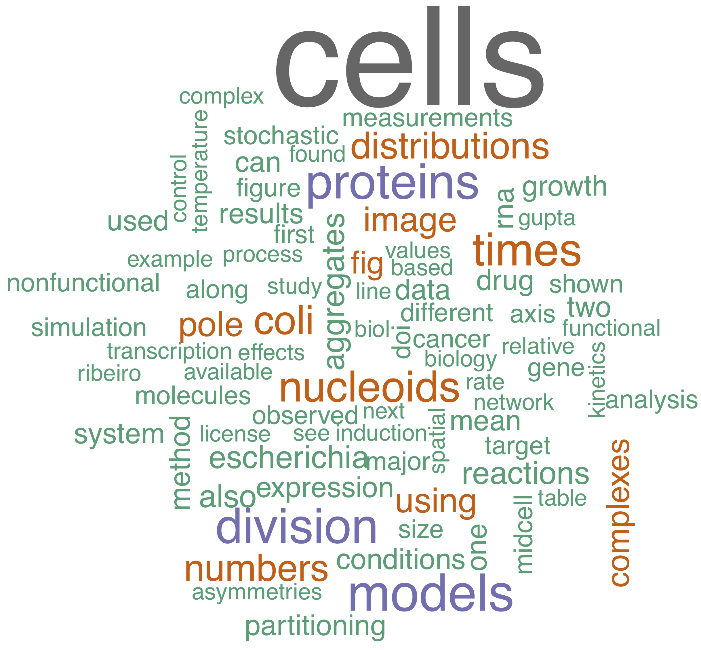

Abhishekh Gupta

Peer Reviewed Publications
- A. Gupta, P. Mendes, ShinyCOPASI: a web-based exploratory interface for COPASI models, in Backlog.
- A. Gupta, P. Gautam, K. Wennerberg and T. Aittokallio (2020), A normalized drug response metric improves accuracy and consistency of drug sensitivity quantification in cell-based screening. Communications Biology, 3, 42, doi: 10.1038/s42003-020-0765-z.
- X. Qiao, Y. Liu, M. L. Prada, A. Mohan, A. Gupta, H. Haikala, K. Talvinen, L. Yetukuri, J. W. Pylvänäinen, J. Klefström, A. Meinander, T. Aittokallio, P. Kronqvist, V. Hi- etakangas, M. Eilers, and J. Westermarck (2020), UBR5 is co-amplified with MYC in breast tumors and encodes an ubiquitin ligase that limits MYC-dependent apoptosis, Cancer Research, 80(7), doi: 10.1158/0008-5472.CAN-19-1647.
- J. Tang, A. Gupta, P. Gautam, L. He, S. Timonen, Y. Akimov, A. Szwajda, A. Jaiswal, D. Turei, B. Yadav, M. Kankainen, J. Saarela, J. Saez-Rodriguez, K. Wennerberg and T. Aittokallio (2019), Systematic prediction of selective synergies with a network pharmacology model: the case of combined Aurora B and ZAK inhibition in MDA-MB-231 breast cancer cells. npg Systems Biology and Applications, 5:20. doi: 10.1038/s41540-019-0098-z.
- A. Gupta and P. Mendes (2018), An Overview of Network-Based and Network-Free Approaches for Stochastic Simulation of Biochemical Systems. Computation, 6, 9, doi:10.3390/computation6010009.
- J. Tang, Z.R. Tanoli, B Ravikumar, Z. Alam, A. Rebane, M. Vähä-Koskela, G. Peddinti, A. J. van Adrichem, J. Wakkinen, A. Jaiswal, E. Karjalainen, P. Gautam, L. He, E. Parri, S. Khan, A. Gupta, M. Ali, L. Yetukuri, A.L. Gustavsson, B. Seashore-Ludlow, A. Hersey, A.R. Leach, J.P. Overington, G. Repasky, K. Wennerberg, and T. Aittokallio (2017), DrugTargetCommons: a community-effort to build a consensus knowledge base for drug-target interactions. Cell Chemical Biology, doi:10.1016/j.chembiol.2017.11.009.
- R. Neeli-Venkata, A. Martikainen, A. Gupta, N. Goncalves, J. Fonseca, and A. Ribeiro (2016). Robustness of the process of nucleoid exclusion of protein aggregates in Escherichia coli. Journal of Bacteriology, 198(3), doi: 10.1128/JB.00848-15.
- S. Oliveira, R. Neeli-Venkata, N. Goncalves, J. Santinha, L. Martins, H. Tran, J. Mäkelä, A. Gupta, M. Barandas, A. Häkkinen, J. Lloyd-Price, J. Fonseca, and A. Ribeiro (2015). Increased cytoplasm viscosity hampers aggregate polar segregation in Escherichia coli. Molecular Microbiology, 99(2), doi: 10.1111/mmi.13257.
- J. Santinha, L. Martins, A. Häkkinen, J. Lloyd-Price, S. Oliveira, A. Gupta, T. Annila, A. Mora, A. Ribeiro, J. Fonseca (2015). iCellFusion - Tool for Fusion and Anal-ysis of Live-cell Images from Time-lapse Multimodal Microscopy.Biomedical ImageAnalysis and Mining Techniques for Improved Health Outcomes,IGI Global:71-99,doi: 10.4018/978-1-4666-8811-7.ch004.
- A. Gupta, J. Lloyd-Price, S. M.D. Oliveira, A.B. Muthukrishnan, and A.S. Ribeiro (2014) Robustness of the division symmetry in Escherichia coli and functional consequences of symmetry breaking. Physical Biology, 11(6):066005, doi: 10.1088/1478-3975/11/6/066005..
- A. Gupta, J. Lloyd-Price, and A.S. Ribeiro (2014) Modelling Polar Retention of Complexes in Escherichia coli. Lecture Notes in Computer Science 8859. doi: 10.1007/978-3-319-12982-2_17.
- A. Gupta, J. Lloyd-Price, and A.S. Ribeiro (2014) In silico analysis of division times of Escherichia coli populations as a function of the partitioning scheme of non-functional proteins. In Silico Biology. doi: 10.3233/ISB-140462.
- A. Gupta, J. Lloyd-Price, M. Kandhavelu, S. M.D. Oliveira, and A.S. Ribeiro (2013) In vivo kinetics of segregation and polar retention of MS2-GFP-RNA complexes in Escherichia coli, Biophysical Journal,106(9). doi: 10.1016/j.bpj.2014.03.035.
- J. Lloyd-Price, A. Gupta, and A.S. Ribeiro (2012) SGNS2: a compartmentalized stochastic chemical kinetics simulator for dynamic cell populations, Bioinformatics, doi: 10.1093/bioinformatics/bts556.
- M. Kandhavelu, J. Lloyd-Price, A. Gupta, A.B. Muthukrishnan, O. Yli-Harja, and A.S. Ribeiro (2012) Regulation of the in vivo kinetics of the rate limiting steps of the lac/ara-1 promoter.FEBS Letters 586, 3870-3875. doi:10.1016/j.febslet.2012.09.014.
- J. Lloyd-Price, A. Gupta, O. Yli-Harja, and A.S. Ribeiro (2012) Robustness and information propagation in attractors of random Boolean networks, PLoS ONE 7(7):e42018. doi:10.1371/journal.pone.0042018
- M. Kandhavelu, H. Mannerstrom, A. Gupta, A. Hakkinen, J. Lloyd-Price, O. Yli-Harja, and A.S. Ribeiro (2011) In vivo kinetics of transcription initiation of the larpromoter in Escherichia coli. Evidence for a sequential mechanism with two rate limiting steps. BMC Systems Biology 5:149. doi:10.1186/1752-0509-5-149
Conference Presentations
- A. Gupta, F. Bergmann, B. Klahn, J. Pahle, S. Sahle,S. Hoops, U. Kummer, P.Mendes. COPASI: a complex pathway simulator, North Carolina State University,Raleigh, NC, USA, August 15, 2018.
- A. Gupta, P. Mendes. Benchmarking implementations of stochastic simulation forbiochemical networks, Center for Cell Analysis & Modeling, UConn Health, Farm-ington, CT, USA, March 09, 2018.
- A. Gupta. Drug sensitivity scoring; past, present, and future, Center for Quantitative Medicine, UConn Health, Farmington, CT, USA, January 02, 2018.
- A. Gupta, P. Gautam, K. Wennerberg, and T. Aittokallio. Improved drug re-sponse quantification based on the elimination of experimental variabilities in high-throughput cell-based screenings. EU-Life Meeting: Principles of Homeostasis, MaxDelbruuck Centrum for Molecular Medicine, Berlin May 22-23, 2017.
- A. Gupta, J. Lloyd-Price, and A. Ribeiro. Modeling polar retention of complexesinEscherichia coli. 12th Conference on Computational Methods in Systems Biology,Manchester, UK, November 17-19, 2014.
- A. Gupta, J. Lloyd-Price, and A. Ribeiro. Modeling partitioning in cell divisionand subsequent aging in Bacteria. International Conference in Computational CellBiology, Blacksburg, Virginia, USA, August 14-16, 2013.
- A. Gupta, J. Lloyd-Price, M. Kandhavelu, S. Oliveira, and A. Ribeiro. Cell divisionasymmetries inEscherichia coliwhen in sub-optimal conditions. 10th InternationalWorkshop on Computational Systems Biology, Tampere, Finland, June 10-12, 2013.
- A. Gupta, J. Lloyd-Price, O. Yli-Harja, and A. Ribeiro. Attractor robustnessdoes not restrict information propagation in critical random Boolean networks,. 9thInternational Workshop on Computational Systems Biology, Ulm, Germany, June4-6, 2012.
Grants
- Tampere Doctoral Programme in Information Science and Engineering(TISE), Finland. Grant for PhD studies. From 1.1.2013 to 31.12.2013.
- Finnish Cultural Foundation, Teresia ja Rafael Lönnströmin rahastosta, Finland. Grant for PhD studies. From 1.1.2014 to 31.12.2014.
- Finnish Cultural Foundation, Aino ja Einari Haakin rahastosta, Finland. Grant for PhD studies. From 1.3.2015 to 31.12.2015.
- Tampereen Kaupungin Tiederahasto, Finland. Grant for PhD dissertation. From 1.1.2016 to 28.2.2016.
Teaching
- Completed "Pedagogical Skills for Teachers and Teaching Practice" course organized by TAOKK, 2014.
- Lecturer of SGN-53606: Computational Models in Complex Systems, Tampere University of Technology, 2013-14 and 2014-15.
- Teaching Assistant of SGN-6457: Computational Models in Complex Systems, Tampere University of Technology, 2011-12 and 2012-13.
- Lecturer of SGN-6106: Computational Systems Biology I, Tampere University of Technology, 2012.
Links
Updated on 17 June 2020